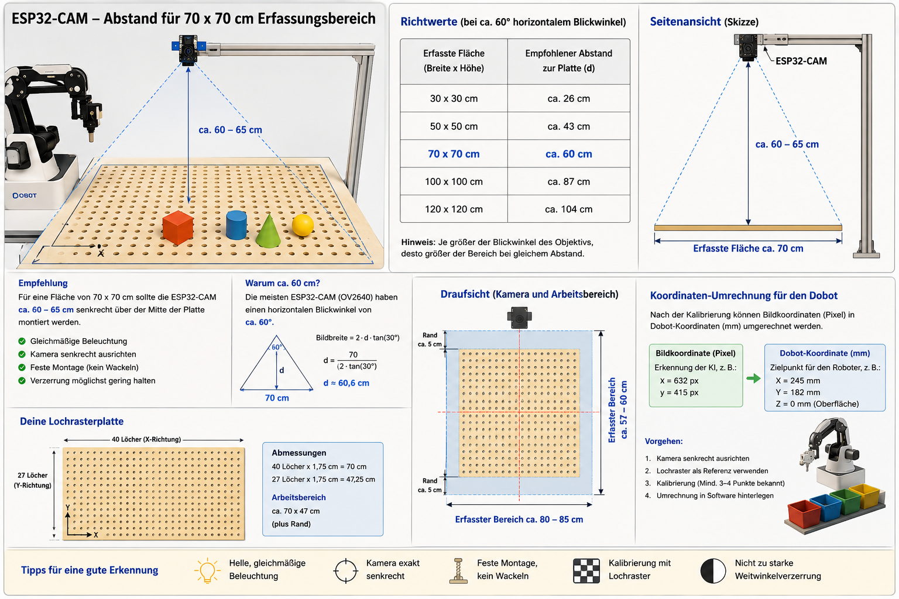

Projektübersicht
Diese Seite dokumentiert unser Projekt zur Bilderkennung im Umfeld des Dobot Magician.
Inhalte, Versuchsaufbauten und Beispielprogramme werden hier schrittweise ergänzt.
Geplante Inhalte
- Hardware-Aufbau und Kamera-Positionierung
- Erkennung von Objekten und Merkmalen
- Übergabe der Erkennungsergebnisse an den Roboter
- Beispielabläufe für Pick-and-Place
Praktische Umsetzung
OpenCV Bibliothek für die Bilderkennung
- ESP32-CAM Modul für die Bildaufnahme
- Python-Programmierung für die Steuerung und Bildverarbeitung
Bild und Datei

Zurück zu den Dobot-Projekten: Dobot Magician Projekte